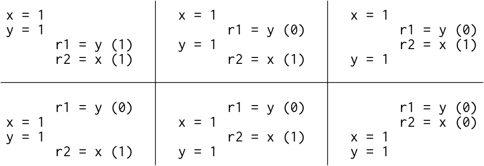
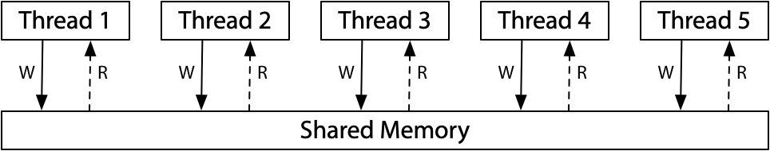
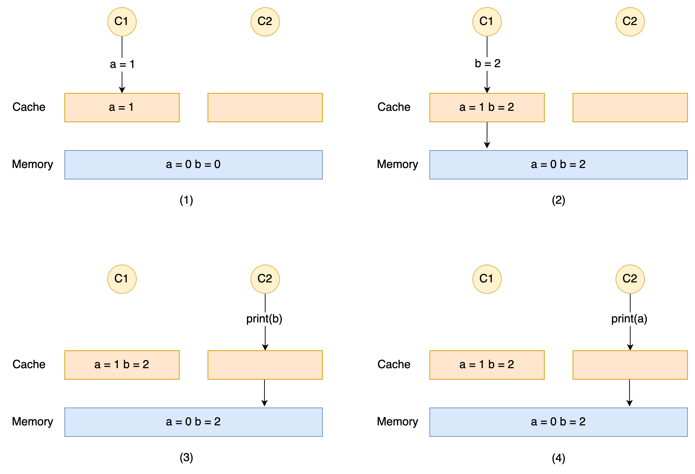
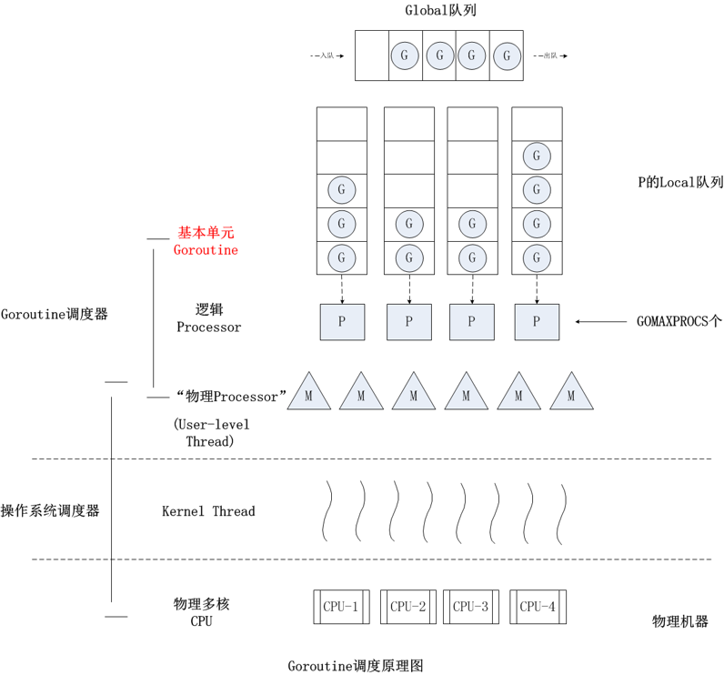
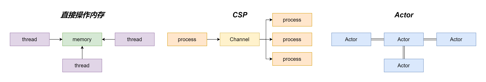
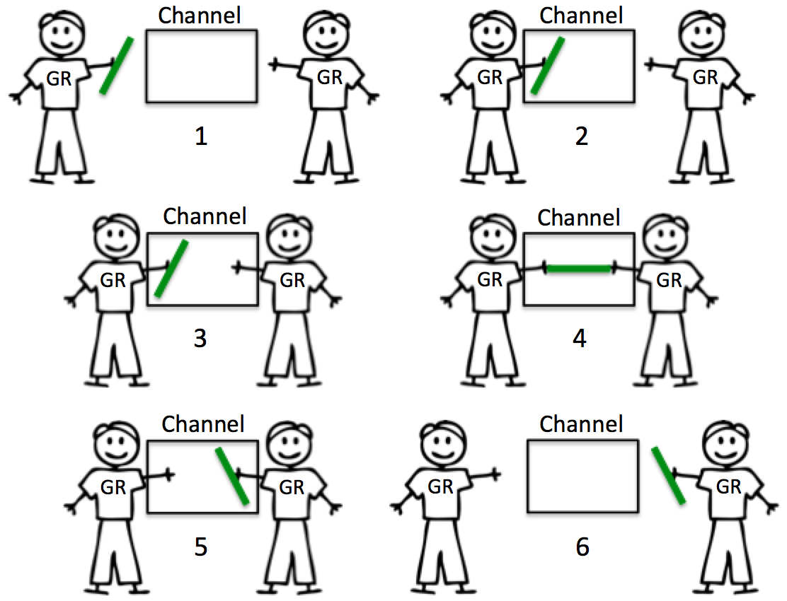
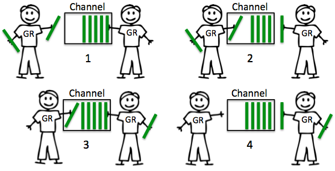

Go 内存模型
先来看一段代码
package main |
我们将代码分成如下几个部分
func f() func g() |
代码执行时，r1 和 r2 会发生什么结果呢?
一个朴素的想法是
- 执行步骤为 1 -> 2 -> 3 -> 4，那么
r1 = 1，r2 = 1 - 执行步骤为 3 -> 4 -> 1 -> 2，那么
r1 = 0，r2 = 0
那么难道只有这几种结果么? 其实不是的，它的结果可能会有如下的 6 种

那么为什么会出现上述的这几种情况呢?
主要是因为 硬件(CPU) 或者 软件(编译器) 可以根据其对代码的分析的结果，一定程度上打乱代码的执行顺序，以达到提高 CPU 利用率，或者让程序运行得更快的目的
那么硬件和软件是怎么做的，它们也有对应的内存模型吗?
是的
对于硬件的内存模型来讲，就不得不要引入一个概念: 顺序一致性
那么什么是 顺序一致性?
对于某个多处理器的计算机系统而言，其任何执行的结果都是相同的，看上去其所有的处理器的操作都是按照某种顺序执行的，而每个处理器的操作都是按照程序指定的顺序出现的。这样的特征就被称之为 顺序一致性
一个总体的思维模型图如下

即所有的处理器直接连接到 一个共享内存，这样对于这个系统来说，由于不涉及到缓存，每次处理器需要做 读/写 操作时，处理器对于 读/写 的请求都会先转到共享内存。同时，由于 一次只处理一个线程 ，所以当这个系统在处理多个线程的 读/写 操作时，这多个线程在访问内存时就会有一个 先来后到 的关系，这个时候我们认为它实现了某种顺序，这个顺序就是 顺序一致性
对于软件的内存模型来讲，其主要表现是在编译器上，这里同样需要理解几个概念: Happens Before 和 编译器重排 以及 内存重排
什么是 Happens Before?
假设 A 和 B 表示一个多线程的程序执行的两个不同的操作，如果 A Happens Before B，那么 A 操作对内存的影响 将对执行 B 操作的线程(且执行 B 操作之前) 可见
同时
- 如果 A 操作和 B 操作在 同一线程 中执行，并且 A 操作的声明在 B 操作之前，这个时候我们说 A Happens Before B
- 如果 A 操作 Happens Before B 操作，而 B 操作又 Happens Before C 操作，这个时候我们说 A Happens Before C
但是需要注意
A 操作 Happens Before B 操作并不意味着 A 操作在 B 操作之前发生(考虑下编译器重排)
比如代码
package main
var x, y int
func main() {
x = y + 1 // A 操作
y = 1 // B 操作
}尽管根据定义，A 操作 Happens Before B 操作，但是编译器可能会对上面的代码产生一些重排序，即 编译器重排，编译成汇编代码时，执行顺序可能如下
y = 1 // B 操作
x = y + 1 // A 操作即 A 操作并没有在 B 操作之前发生，但这 并没有违反 Happens Before 的定义，因为在上述的例子中，对
x的赋值(A 操作)并没有对y的赋值(B 操作)有影响，即假如 A 操作和 B 操作之间互不影响，那么它们之间对内存的影响也就不存在可见和不可见的关系，但是这样依然是遵循 Happens Before 定义的A 操作在 B 操作之前发生也并不意味着 A 操作 Happens Before B 操作(考虑多线程的情况)
比如代码
package main
package fmt
var x, y int
func foo() {
x = 1 // A 操作
y = 1 // B 操作
}
func main() {
go foo()
if (y) { // C 操作
fmt.Printf("%v\n", x) // D 操作
}
}根据上述代码可知:
- A 操作 Happens Before B 操作
C 操作 Happens Before D 操作
假设此时在
main中，y读取到的值是1，此时我们知道 B 操作在 C 操作之前发生，但是这并不意味着 B 操作 Happens Before C 操作，因为这里并没有 任何规则说明 B 操作 Happens Before C 操作同时 A 操作和 D 操作也不存在 Happens Before 关系，A 操作和 D 操作之间的内存交互也可能被重排序(编译器重排 或者 CPU 内存重排)
即便 C 操作中
y的值是1，D 操作中打印出来的x的值也可能是0
上面的例子中讲到了什么是 编译器重排 ，其实就是将代码的执行顺序打乱以提升代码的执行性能，那么为什么需要 编译器重排?
比如下面的伪代码
X = 0 |
在上述代码中，X = 1 被 重复赋值 了 100 次，这完全是没有必要的，所以编译器会经过 重排 将代码优化如下
X = 1 |
这样就能避免被重复赋值这种情况，在生成汇编时也没必要用到一个寄存器专门做这件事，相当于提升了代码最终的执行效率
那么什么是 内存重排?
内存重排 这里指的是 CPU 对缓存中数据的重排，那么为什么需要这种重排?
对于 CPU 来说，有 一级/二级/三级 缓存，缓存大小越大访问速度越慢，为了更高效率地平衡访问速度和数据存储而衍生出来的一种体系，最终的目的都是为了在当前的数据存储条件下，能达到最高的访问速度。由于这些缓存访问速度的不同，那么其访问到的数据也会带来一定的 不一致 的问题
如下图所示

由图可以看到，Cache 和 Memory 由于某种原因，导致了其存储的数据不一致，那么最终就会导致其访问到的数据与期望的数据不一致的情况: a = 1 b = 2 和 a = 0 b = 2
那么 CPU 是如何解决这种 不一致 问题带来的不确定性呢?
答案就是用某种方式保持 Cache 和 Memory 的 读写一致性
大体上有 2 种方式:
- write back(稍后同步)
可以减少不必要的内存写入，减轻总线竞争，性能较强 - write through(立刻同步)
性能相较 write back 差，但读 Cache 以及其与 Memory 的一致性维护也更简单
以单核环境，并且只有一个 level 的 Cache 的 write back 为例，它为了维护读写一致性有 2 种操作
- flush
如果 CPU 更改了某条 Cache line 中的数据导致了 Cache 数据比 Memory 数据要新，那么就需要将这条 Cache line 标记为 Modified，在该 Cache line 需要被释放时，需要把其中的数据 flush 到 Memory 来保持同步 - invalidate
如果在 DMA 时，外来的数据不经过 CPU 直接传送到了 Memory 的某个位置导致了 Memory 数据比对应的某个 Cache line 的数据要新，那么就需要将这条 Cache line invalidate 化并将其标记为 dirty。下次 CPU 从这条 Cache line 读数据时就知道这个数据是旧的，得从 Memory 读
Cache 读
- 若 Cache miss，从 Memory 读取数据，然后 fill 数据到 Cache line 上
- 若 Cache hit，但是对应的 Cache line 被标记为 invalidate/dirty，则执行步骤 1
- 若 Cache hit，对应的 Cache line 没有标记，则直接读这个 Cache line
Cache 写
- 若 Cache miss，先 fill 数据到 Cache line 上，再改写 Cache line 的内容，将其 标记为 Modified
- 若 Cache hit，但是对应的 Cache line 被标记为 invalidate/dirty，则执行步骤 1
- 若 Cache hit，对应的 Cache line 没有标记，则直接写这个 Cache line，并将其 标记为 Modified
总之，有了 flush 和 invalidate 的操作后，在 Cache line 上就有对应的数据的新旧标记了，有了这个标记，在设定了系统优先对 Cache line 优先读写的情况下，就可以知道什么情况下数据是新的还是旧的，什么情况下可以从 Cache line 读写还是从 Memory 读写，那么也就可以保证 Cache 和 Memory 的读写一致性了
goroutine
goroutine 是什么? 简单来讲，goroutine 就是一个 由 go 运行时负责调度的用户层轻量级线程，由于其线程并不是由操作系统来调度，所以 goroutine 上下文切换代价小，资源占用也低
既然 go 运行时能负责调度 goroutine，那么它是怎么被调度的?
先来看一张图

这个图即 G-P-M 模型
- G: 即 goroutine
- P: 即 processor，它是一个 逻辑处理器
- M: 即 machine，它往往代表着一个物理 CPU
对于 G 和 M 来讲，P 是它们的一个中间层，对于 G 来说，P 就是运行它的 CPU；而对于 goroutine 调度器来讲，M 才是它真正的 CPU。本质上来说，通过 P 这个中间层，可以让 G 真正的运行起来，然后通过与 P 绑定 的 M 去执行相应的操作
那么 M 是如何做到让 G 停下来并调度下一个可运行的 G 的呢?
答案是 使用 抢占式调度，原理是 只要某个 G 调用了某个函数，那么 Go 运行时就有了抢占这个 G 的机会
怎么做到抢占的呢?
在 Go 程序启动时，运行时会启动一个特殊的 M 线程，这个线程的名字叫做 sysmon，这是一个监视线程，它无须与 P 进行绑定，它在运行期间的作用主要有如下几种
- 在一定时间内释放闲置的物理内存
- 在一定时间内做垃圾回收
- 向长时间运行的 G 任务发出抢占调度
- 收回因为系统调用而长时间阻塞的 P
一旦一个 G 任务运行时间过长，那么 sysmon 就会对这个 G 发出抢占调度的请求。一旦这个 G 的 抢占标志位被置为了 true，那么在这个 G 下一次调用某个函数时，运行时便可以将这个 G 抢占，并将其移出到 P 的本地队列中。如果 P 的本地队列已满，则移出到 Global 队列中，等待下一次被调度
channel
在提到 channel 之前，首先应该提到的应该是 CSP 模型
什么是 CSP 模型? CSP 模型就是 Communicating Sequential Process，即 通信顺序进程，这是为了简化并发代码的编写而创建的一个理论模型，如图所示

相比于使用 共享内存来通信 的方式来编写并发代码，使用 CSP 模型更简洁易懂，可维护性也更高
图中 Actor 模型表示 Erlang 采用的一种并发模型，跟 CSP 模型相似，都是使用 通信来共享内存
通过共享内存来通信就需要用到互斥锁、CAS(Compare And Swap) 等来保证并发访问内存的安全，而在 Go 中为了实现通过通信来共享内存，Go 引入了 channel 和 goroutine 来实现 CSP 模型去解耦这个操作。
channel 的作用是建立起 goroutine 之间的 桥梁，好处是在 goroutine 中 不用手动去做资源的锁定和释放
注意: channel 底层也是通过互斥锁、原子操作这些低级并发原语(low level primitive)实现的，所以性能上相比较于这些会差些。对于有性能要求的场景可以使用 Go 的 sync 的包提供的一些低级并发原语
这里还要说明的一个概念是 原子操作
原子操作是什么?
CPU 在执行一条指令的时候对于 单个机器字长 的的数据的写入可以保证是原子的，比如 32 Bit 的系统对应的单个机器字长就是 4 byte，而 64 Bit 系统对应的单个机器字长就是 8 byte。对于一个 32 Bit 的系统，它要去写入一个 8 byte 的数据时，就需要执行 2 次写入操作，这 2 次操作之间就 没有原子性，可能会出现 2 种情况
- 数据先写入后半部分，再写入前半部分
- 数据先写入前半部分，写入后半部分时失败
所以所谓的原子性，就是在对某个数据进行操作时，这个操作是 一次性的，顺序确定的，以及成功的
下面回到 channel，对于 channel 来说，它分 2 种
无缓冲的 channel
无缓冲的 channel 会阻塞直到数据接收完成，常用于 2 个 goroutine 互相等待同步

有缓冲的 channel
有缓冲的 channel 如果在缓冲区未满的情况下发送是不阻塞的，在缓冲区不为空时，接收是不阻塞的

参考链接
- [译]更新Go内存模型
- 深入解析 Go - 内存模型
- Go并发编程(二) Go 内存模型
- Go并发编程(十) 深入理解 Channel
- cache之读写一致性
- Golang GMP 机制
- 《Go 语言精进之路: 从新手到高手的编程思想、方法和技巧》